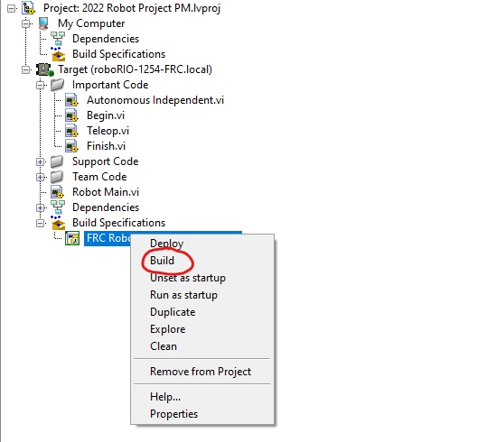
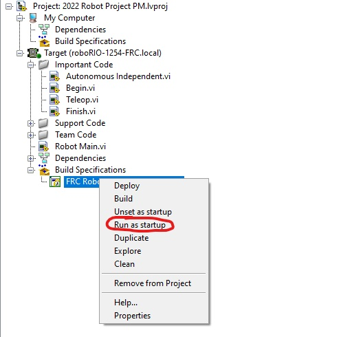

Running the program on your robot
First, open up the build specifications and right-click the FRC Robot Boot-up Development. After that, click the build button

After that finishes, right click it again and click run as startup. You must be ethernetted into the robot to do this

Next, open up your driver station and you should be able to run the robot by clicking the enable button

That is all there is to it, if you need any more help, go to either Chief Delphi or NI Forums for more help!